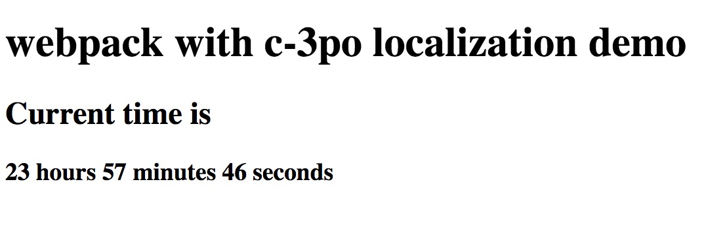
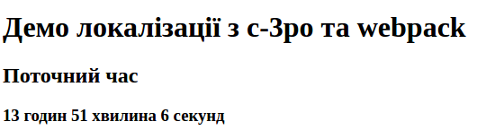

Localization with webpack and c-3po
This short tutorial will demonstrate how c-3po can be used with webpack.
Sources - here Live demo - here
Step 1. Installation
- Firstly we need to create separate folder run npm init and execute installation instructions.
npm install --save c-3po && npm install --save-dev babel-plugin-c-3po - Also we need to install webpack and babel loader for the webpack.
just following install instructions from here
npm install babel-loader babel-core babel-preset-es2015 webpack --save-dev
Step 2. Setup app
Now we are ready to make some basic setup for our application. It will consist of index.html file and app.js. Let's add ./dist directory and add index.html there:
<!DOCTYPE html>
<html lang="en">
<head>
<meta charset="UTF-8">
<title>Webpack with c-3po demo</title>
</head>
<body>
<div id="content"></div>
<script src="./app.js"></script>
</body>
</html>
Nothing special, just some html boilerplate.
Let's add app.js file also, that will contain our simple business logic:
import { ngettext, msgid, t } from 'c-3po';
const content = document.getElementById('content');
const view = (hours, minutes, seconds) => {
const hoursTxt = `${hours} hours`;
const minutesTxt = `${minutes} minutes`;
const secondsTxt = `${seconds} seconds`;
return `
<h1>${ t`webpack with c-3po localization demo` }</h1>
<h2>${ t`Current time is` }</h2>
<h3>${hoursTxt} ${minutesTxt} ${secondsTxt}</h3>
`
};
setInterval(() => {
const date = new Date();
content.innerHTML = view(date.getHours(), date.getMinutes(), date.getSeconds());
}, 1000);
This is simple program that will display current time:

Let's make setup for webpack. Here is our webpack.config.js:
module.exports = {
entry: './app.js',
output: { filename: './dist/app.js' },
module: {
rules: [
{ test: /\.(js|jsx)$/, loader: 'babel-loader' }
]
}
}
And now we can execute webpack to build our app.js file and open index.html in browser.
Step 2. Plural forms
The English language has only 2 plural forms and a rule for the definition of what form we should be used (n!=1). c-3po uses en locale by default. So, you can just enable the c-3po plugin and use ngettext for describing plurals.
Let's add c-3po plugin to our babel loader config (I will be using webpack 2 config format).
// ...
rules: [
{
test: /\.(js|jsx)$/,
use: { loader: 'babel-loader', options: {plugins: ['c-3po'] } }
}
]
Let's wrap our literals in ngettext and t:
import { ngettext, msgid, t } from 'c-3po';
const view = (hours, minutes, seconds) => {
const hoursTxt = ngettext(msgid`${hours} hour`, `${hours} hours`, hours);
const minutesTxt = ngettext(msgid`${minutes} minute`, `${minutes} minutes`, minutes);
const secondsTxt = ngettext(msgid`${seconds} second`, `${seconds} seconds`, seconds);
return `
<h1>${ t`webpack with c-3po localization demo` }</h1>
<h2>${ t`Current time is` }</h2>
<h3>${hoursTxt} ${minutesTxt} ${secondsTxt}</h3>
`
};
We specified all plural forms for en locale, and everything is ready to build webpack and see how they are working in the browser:
Now we see 1 second instead of 1 seconds. Let's examine how the size of our app.js
changed:
Before - 3.0K:
total 8,0K
-rw-rw-r-- 1 www www 3,0K jan 2 11:47 app.js
-rw-rw-r-- 1 www www 198 jan 2 11:24 index.html
After - 5.1K:
total 12K
-rw-rw-r-- 1 www www 5.1K jan 2 11:49 app.js
-rw-rw-r-- 1 www www 198 jan 2 11:24 index.html
Note that it's non-minified and non-gzipped code. So, you can see that c-3po adds minimal overhead. This is one of the main advantages of this library is that it has almost zero overhead(1.9K) in the resulting bundles.
Step 3. Extracting translations
To be able to execute all commands from this step you need to install GNU gettext utility. (msginit, msgmerge commands should be available). The very generic description of h gettext translation phases are:
- You wrap all your literals with special functions (gettext, ngettext e.t.c).
- Extracting translations to .pot files (template files).
- Updating existing .po files with newly extracted translations from .pot.
- Translator adds translations to appropriate locales inside .po files.
- Resolving translations from .po files.
Let's start with extraction step. c-3po will extract translations that it will find only if it has extract.output setting, let's modify our webpack.config.js to be able to work in the extract mode.
module.exports = ({ extract } = {}) => { // webpack 2 can accept env object
const c3po = {};
if (extract) {
c3po.extract = { output: 'template.pot'} // translations will be extracted to template.pot
}
return {
entry: './app.js',
output: {
filename: './dist/app.js'
},
module: {
rules: [
{
test: /\.(js|jsx)$/,
use: {
loader: 'babel-loader',
options: {plugins: [['c-3po', c3po]]}
}
}
]
}
}
};
Let's extract translated strings by executing webpack --env.extract.
Step 4. Localization
For example, let's add some locale. For this tutorial, I have chosen my native locale - uk,
because I am from the Ukraine. Let's use msginit tool for creation of .po file with all
appropriate to uk locale headers:
msginit -i template.pot -o uk.po -l uk
The next step is to add translations to uk.po. You can check this file here. After all, translations are added, we should modify our webpack config to be able to produce localized assets.
module.exports = ({ extract, locale } = {}) => {
const c3po = {};
if (extract) {
c3po.extract = { output: 'template.pot'}
}
if (locale) { // add locale setting for c-3po babel plugin
c3po.resolve = { translations: `${locale}.po` };
}
return {
entry: './app.js',
output: {
// change build path (depends on locale).
filename: locale ? `./dist/${locale}/app.js` : './dist/app.js'
},
module: {
rules: [
{
test: /\.(js|jsx)$/,
use: {
loader: 'babel-loader',
options: {plugins: [['c-3po', c3po]], cacheDirectory: !(c3po.extract || c3po.resolve) }
}
}
]
}
}
};
it's better to disable cacheDirectory for extract and resolve phase. Check this link for the details.
Let's build localized assets with command webpack --env.locale=uk.
If you are still using webpack 1, you can use simple env vars instead of webpack env. For example:
LOCALE=uk webpack.
To see that it works le'ts modify scr attribute in index.html:
<script src="./uk/app.js"></script>
This step is done manually just for demo purpose, in the real world url will be modified somewhere on a backend that renders html output.
Let's check what we see in browser:

Note that Ukrainian locale has 3 plural forms, this information is fetched from the uk.po file headers.
Setp 5. Updating .po files with new translations
In future you will add more string literals to your app, and you will need to update .po files.
I suggest to use msgmerge for that. Here is an example:
msgmerge uk.po template.pot -U
More realistic case
Here is the separate repository where I used the code from this tutorial to publish on gh-pages - https://github.com/c-3po-org/webpack-demo. I have added StaticSiteGeneratorPlugin to generate html output for each locale.